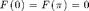
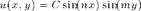

Project 2 The South Crystal
Contents
Exercise 1
Firstly we plot Annie's pig.
figure(1)
[Verticesannie, Facesannie] = simple_ply_loader('annies_pig.ply');
trimesh(Facesannie,Verticesannie(:,1),Verticesannie(:,2),Verticesannie(:,3));
Now we plot Stanford's bunny.
figure(2)
[Verticesstanford, Facesstanford] = simple_ply_loader('stanford_bunny.ply');
trisurf(Facesstanford,Verticesstanford(:,1),Verticesstanford(:,2),Verticesstanford(:,3));
Exercise 2
Write a code that draws the boundary of the polygon.
dlmread read ASCII delimited file so we can use this to import the data.
close all V = dlmread('crystal_bdy.txt'); XV = [V(:,1);V(1,1)]; YV = [V(:,2);V(1,2)]; % Since we want the polygon to be closed. plot(XV,YV,'Color','k','LineWidth',2)
Creat the meshgrid that is large enough to enclose the polygon.
This part is actually similar to the code inside the function ellipse_ev.m.
close all width = max(XV)-min(XV); height = max(YV)-min(YV); xmin = min(XV)-0.1*width; % Let the rectangle to be 10% larger in width and height. xmax = max(XV)+0.1*width; ymin = min(YV)-0.1*height; ymax = max(YV)+0.1*height; dx = (xmax-xmin)/100; % I pick up this number since it's neither too small to be accurate nor too large to calculate. xd = xmin:dx:xmax; yd = ymin:dx:ymax; % These are the parameters for the meshgrid function [X,Y] = meshgrid(xd,yd);
Define a function that is 0 outside the polygon and 1 inside and plot this function.
IN = double(inpolygon(X,Y,XV,YV)); % X and Y are returned by meshgrid % We use 'double' since the surface command in pcolor must take numerical % values. hold on; pcolor(X,Y,IN); % IN specifies the colour according to the 'output' from IN. hold off;
Exercise 3
Introduction - Mathematical techniques involved
We are going to solve the eigenfunction u such that  and
and
By separation of variables, suppose , then we may have an equation as .
Divide both sides of the equation by so that we will have  , where c is a constant independent of x and y.
, where c is a constant independent of x and y.
Therefore this PDE is converted into a system of linear differential equations: where  and where . If c>0, then we can denote c by and thus the first differential equation becomes .
Then we get the general solution
By plugging in the boundary condition , we will have , which is a trivial solution. Therefore, c must be a non-positive constant.
Hence, we may have an expression for the F, which is where n is an integer which is a parameter for the function eiglap_square and constants A and B are arbitrary constants.
Plugging in the boundary condition to determine A and B to have A=0 and thus we have .
Similarly we may have for some integer m.
This gives the eigenfunction  for an arbitrary constant C. Similar to how we deal with eigenvectors in the linear algebra, we now have an eigenspace with as a basis.
Back to the original equation defining eigenfunctions and eigenvalues, we may see that and this gives the value of the eigenvalue .
Admissible values for n and m
So as to ensure that and are both satisfied, n and m must be integers. And since apparently we don't want a trivial solution, we need n and m both to be taking non-zero values.
close all type eiglap_square.m
function eiglap_square(n,m,x,y)
% n and m should be non-zero integer parameters. x and y should be symbolic
% variables.
if rem(n,1) ~= 0 || rem(m,1) ~= 0 || n == 0 || m == 0
error('n and m must be non-zero integers')
else
ef = sin(n*x)*sin(m*y);
lambda = double(n^2 + m^2);
end
[ef,lambda]
end
Exercise 4 and 5
A list of all the changes that I have made
- Line 9 - 17 of crystal_ev.m is the meshgrid created to enclose the polygon instead of the ellipse.
- Line 19 - 23 has defined a 'characteristic function' for the polygon.
- Line 29 requires k to find the entries in G that are greater than 0.5 since we are no longer defining points outside the boundary to be negative, instead, those points are assigned to be 0.
- Line 58 and 67 has changed the eigenmode to its absolute value.
- Line 67 plots the 2nd eigenmode instead of the 10th.
- Line 70 a small change in the title.
close all type crystal_ev.m [ews, evs] = crystal_ev(XV, YV, 1); % make_plot == 1 means we need a graph here.
function [ews, evs] = crystal_ev(xv,yv, make_plots)
% xv and yv should be the x and y coordinates of the vertices respectively
% and make_plots returns true or false.
if nargin < 3
make_plots = true;
end
n = 200; % larger value gives more accuracy but slower
%% make a rectangular grid that will contain the polygon
x1 = min(xv); x2 = max(xv);
y1 = min(yv); y2 = max(yv);
w = min(x2-x1, y2-y1);
x1 = x1-0.1*w; x2 = x2+0.1*w;
y1 = y1-0.1*w; y2 = y2+0.1*w;
dx = (x2-x1) / n;
x1d = x1:dx:x2; y1d = y1:dx:y2;
[x,y] = meshgrid(x1d,y1d);
%% An implicit representation of the shape
% 0 inside and positive outside.
in_out_code = inpolygon(x,y,xv,yv);
G = zeros(size(in_out_code));
G(in_out_code) = 1;
%% Build a grid
% this is from numgrid.m: we choose an ordering for the points
% inside the ellipse (all other points are labeled 0).
k = find(G > 0.5); % now find the linear index of these.
G = zeros(size(x)); % new all zero matrix
G(k) = (1:length(k))'; % label them inside ones from 1 upwards
%figure(2); clf;
%spy(G)
%axis equal
% build a finite different approximation to the Laplacian based on
% the grid G
L = delsq(G);
L = 1/dx^2 * L;
%% find the first 20 smallest magnitude eigenvalues
tic
[evs, ews, flag] = eigs(L, 20, 'sm');
toc
if flag ~= 0
error('convergence problem');
end
ews = diag(ews);
% sort the eigenvalues, we want the smallest first
[ews,I] = sort(ews);
% and re-arrange the eigenvectors too
evs = evs(:,I);
if (make_plots)
figure(1); clf
tic;
for s = 1:16
ev = abs(evs(:,s)); u = zeros(size(G)); u(G>0) = ev;
u(G==0) = nan; % optional, hide the outside
subplot(4,4,s);
% careful with this nan trick: its good for plotting but
% could lead to trouble if u is used in a later computation.
pcolor(x,y,u); shading flat; axis equal; axis tight;
title(['em ' num2str(s) ' /ev=' num2str(ews(s))]);
end
figure(2); clf
ev = abs(evs(:,2)); lambda = ews(2);
u = zeros(size(G)); u(G>0) = ev;
surf(x,y,u);
title(sprintf('2nd eigenmode, lambda = %g',lambda)); toc
drawnow; pause(0);
end
Elapsed time is 0.279676 seconds.
Elapsed time is 0.783396 seconds.
Exercise 6
close all;
Restriction of value for z
As the manual suggests, the height of the skylight can't exceed 2.25 meters. We can do this by multiply the eigenmode by a scalar to restrain the maximum value of z . This can be done by
z(G>0) = 2.25*abs(evs(:,2))/abs(evs(Imax,2));
This means where G is greater than 0 (i.e. the point falls inside the polygon) we assign z to be the absolute value of the eigenmode at that point. And then we multiply it by 2.25/abs(evs(Imax,2)) so that the maximum height will be exactly 2.25 meters.
The following is the code for the function.
type compute_vertices.m;
function Vertices = compute_vertices (xv,yv,Vertices) % xv and yv are the x,y coordinate matrices respectively and Vertices % matrix is the matrix with all the vertices of triangles in 2D plane. [ews, evs] = crystal_ev(xv,yv, 0); [Vmax,Imax] = max(abs(evs(:,2))); %% meshgrid again x1 = min(xv); x2 = max(xv); y1 = min(yv); y2 = max(yv); w = min(x2-x1, y2-y1); x1 = x1-0.1*w; x2 = x2+0.1*w; y1 = y1-0.1*w; y2 = y2+0.1*w; dx = (x2-x1) / 200; x1d = x1:dx:x2; y1d = y1:dx:y2; [x,y] = meshgrid(x1d,y1d); % logic matrix G in_out_code = inpolygon(x,y,xv,yv); G = zeros(size(in_out_code)); G(in_out_code) = 1; %% assign values to z z = zeros(size(x)); z(G>0) = 2.25*abs(evs(:,2))/abs(evs(Imax,2)); Vertices(:,3) = interp2(x,y,z,Vertices(:,1),Vertices(:,2));
Exercise 7
We just need to put all pieces together.
close all; [Vertices, Faces] = simple_ply_loader('crystal_flat.ply'); Vertices = compute_vertices(XV,YV,Vertices); % We add the z value column to the Vertices matrix. figure; hold on; plot(XV,YV,'k','linewidth',2); % We want to plot the boundary as well. H = trimesh(Faces,Vertices(:,1),Vertices(:,2),Vertices(:,3)); set(H,'facealpha',0); axis equal; view(3); title('South Crystal Skylight');
Elapsed time is 0.295438 seconds.
Exercise 8
From crystal_ev.m we can extract the second eigenvalue.
ews(2)
ans =
0.4478
Decimal Places
Take a look at the code of ellipse_ev.m to learn how eigenvalues are derived.
delsq constructs five-point finite difference Laplacian.
Then we assigned L a value such that L = 1/dx^2 * L .
dx
dx =
0.2217
according to our choice of n, which equals to 200. Therefore, the error is , which equals to 0.04915. i.e. we can be confident in 2 decimal places.